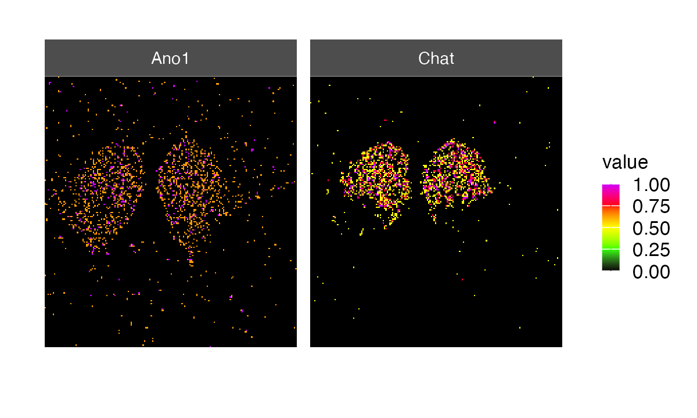
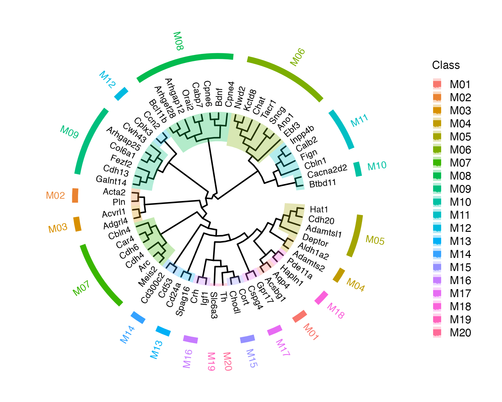
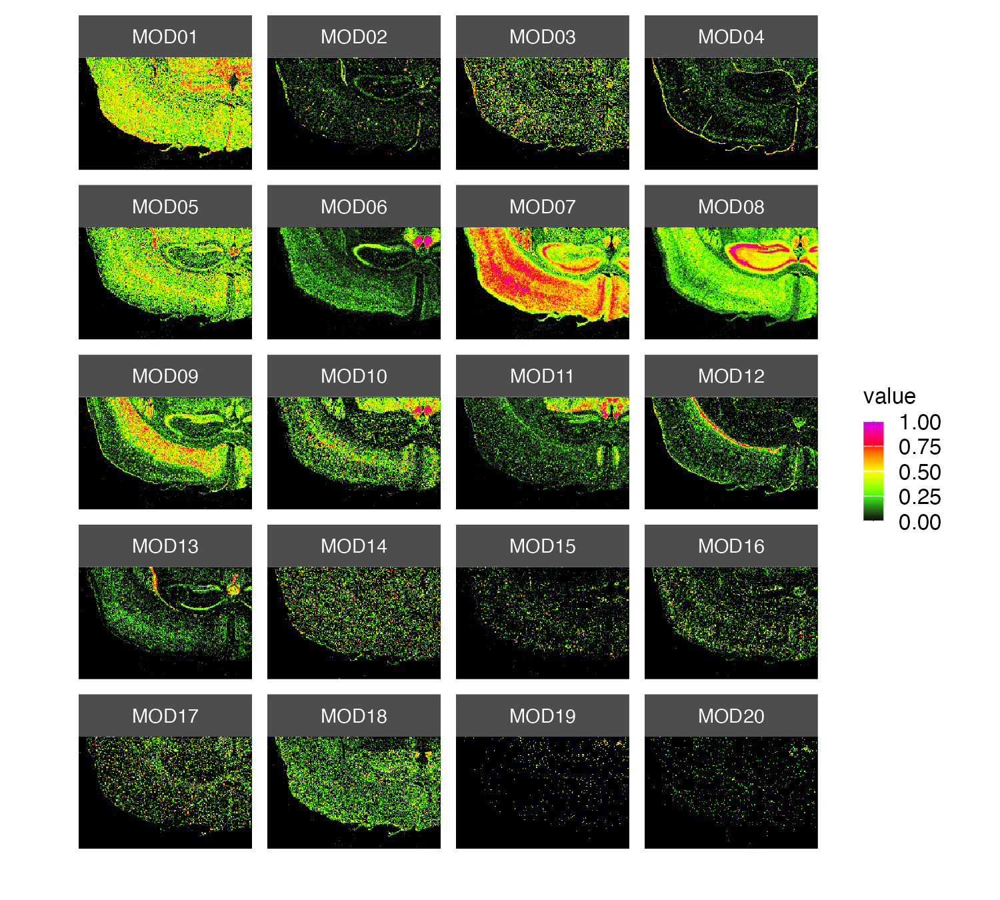
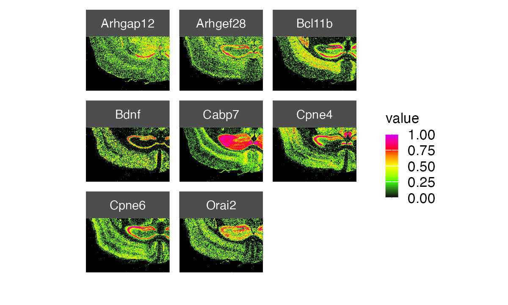
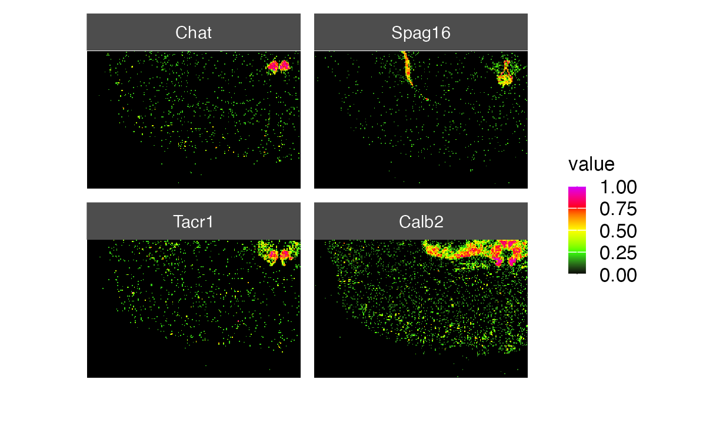
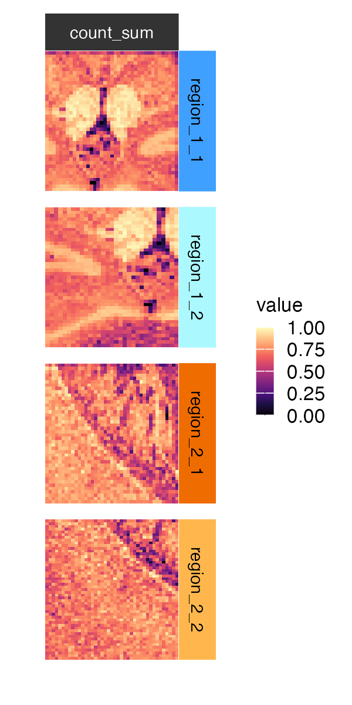
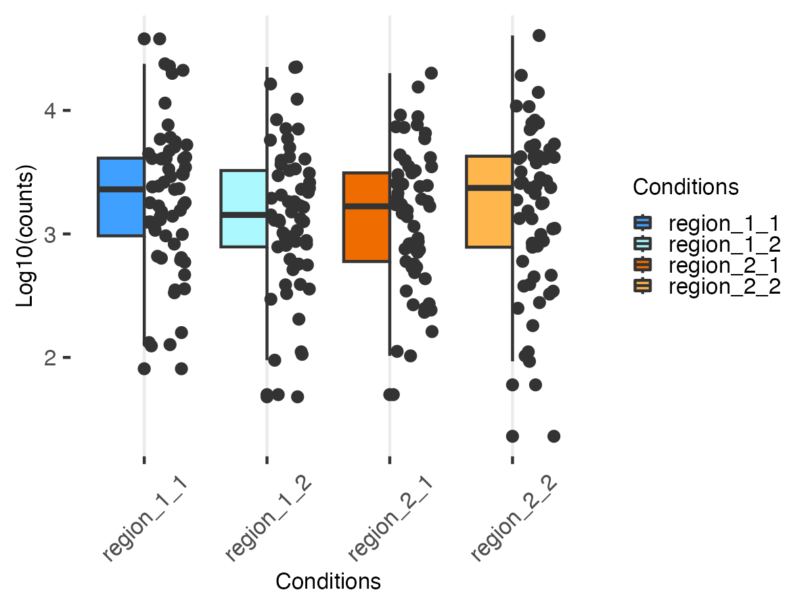
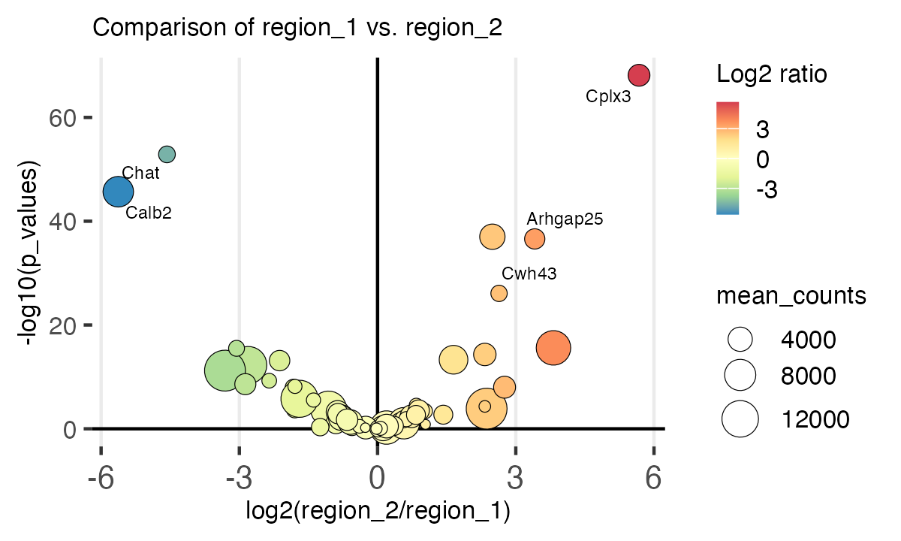

Overview
Spatial transcriptomics (ST) enables researchers to spatially resolved gene expression within tissue sections, providing valuable insights into the spatial organization of cells and biological processes. Cell segmentation followed by transcript partitioning are generally the first steps performed when analyzing imaging-based ST data. This approach can be tricky for a number of reasons, including high cell density and oftentimes complex cell shapes as well as the absence or poor quality of surface labeling. Consequently, cell segmentation is often performed in sparse areas, but this prevents researchers from spatially resolving tissue architecture at the global scale.
The STarlight package is an R package for cell
segmentation-free analysis of imaging-based spatial transcriptomics data
(e.g. Merscope, Xenium or CosMx). It leverages a grid-based
approach that bypasses cell-segmentation, facilitating exploratory
analysis and multi-sample comparison.
Retrieving the dataset
We are going to use a subset (64 genes) of a 10x Genomics dataset taken from the Xenium Explorer Demo. The region corresponds to a fresh frozen mouse brain coronal section. The original dataset can be downloaded here.
## Create a temporary folder
tmpdir <- tempdir()
dir.create(tmpdir, showWarnings = FALSE)
remote_file <- "Xenium_Mouse_Brain_Coronal_tiny.csv.gz"
## Download and unzip the file
url_data <- paste0("https://zenodo.org/records/11371819/files/",
remote_file)
dest_file <- file.path(tmpdir, remote_file)
download.file(url_data, destfile = dest_file)Loading the data
The load_spatial() function is the entry point of the
STarlight package. It allows you to load molecule
coordinates and create a 2D binned grid (default size of 25µm) that will
be stored in an S4 object of class STGrid. Since we are working with a
csv flat file containing x/y molecular coordinates and gene names we do
not need to specify the argument method. If you have access
to the full Xenium directory, you can use the arguments
method="xenium" and path="path/to/directory"
to load the data.
st_obj <- load_spatial(path = dest_file,
method = "coordinates",
sep=",",
mapping = c(feature="feature_name",
x="x_location",
y="y_location"),
bin_size = 25,
control = "(NegControlProbe_)|(BLANK_)", verbose = FALSE)Side note
Using the argument control in the
load_spatial function allows users to identify
blank/control probes in their data. The probes can be removed using the
command below:
st_obj <- rm_controls(st_obj)Manipulating the STGrid object
The Spatial Transcriptomic Grid class (STGrid) is a structured framework for managing and analyzing data. It facilitates the exploration and interpretation of spatial gene expression patterns within tissue sections.
STarlight::set_verb_level(1)
st_obj
#> |-- INFO : An object of class STGrid
#> |-- INFO : Number of counts: 2151300
#> |-- INFO : Number of features: 61
#> |-- INFO : Bin size: 25
#> |-- INFO : Number of bins (x axis): 218
#> |-- INFO : Number of bins (y axis): 141
#> |-- INFO : x_min: 7.1552773
#> |-- INFO : x_max: 5447.244
#> |-- INFO : y_min: 12.103435
#> |-- INFO : y_max: 3534.868
#> |-- INFO : >>> Please, use show_st_methods() to show availables methods <<<Here are the slots contained in the object:
slotNames(st_obj)
#> [1] "coord" "bin_mat" "y_max"
#> [4] "y_min" "x_min" "x_max"
#> [7] "path" "method" "meta"
#> [10] "bin_size" "bin_x" "bin_y"
#> [13] "ripley_k_function" "control"Multiple methods are supported by the STGrid object:
STarlight::show_st_methods()
#> [1] "[" "[[" "[[<-"
#> [4] "$" "$<-" "bin_mat"
#> [7] "bin_size" "bin_x" "bin_y"
#> [10] "col_names" "compute_k_ripley" "compute_module_score"
#> [13] "coord" "dim" "feat_names"
#> [16] "get_coord" "hc_tree" "meta_names"
#> [19] "nb_feat" "nb_items" "nbin_x"
#> [22] "nbin_y" "order_feat_by_ripley" "plot_rip_k"
#> [25] "re_bin" "ripley_k_function" "rm_controls"
#> [28] "row_names" "show" "spatial_image"
#> [31] "spatial_plot" "summary" "tab"
#> [34] "table_st" "write_coord"Subsetting
We’ve made it easy for users to subset data in their STGrid object using the “[” operator. This is designed to facilitate the extraction of specific genes or regions for a more focused analysis.
Subsetting using bin_x / bin_y
We can explore the binning information stored within the STGrid
object using bin_x() and bin_y().
This command retrieves the first few entries of the bin_x vector (bins along the x-axis).
Similarly, this command retrieves the first few entries of the
bin_y vector (bins along the y-axis).
We can leverage the subsetting function to extract data corresponding to specific bins along the x-axis (i.e. bins from the 50th to the 100th entry of the bin_x vector). The following command extracts a subset of the data and saves it to a new STGrid object.
subset <- st_obj[bin_x(st_obj)[50:100], ]Subsetting using genes
We can also extract data associated to specific genes. Here we extract data corresponding to the genes Chat and Cbln4:
st_obj[c("Chat", "Cbln4"), ]Subsetting using numeric indices
We can retrieve data based on the position of genes within the
feat_names() vector of the STGrid object. Let’s extract
data for the first 10 genes according to their position in the
feat_names() vector:
st_obj[feat_names(st_obj)[1:10], ]Users can also explore data for the 10th to 12th genes using numeric indices. We first start by determining the total number of genes in our STGrid object:
nb_feat(st_obj)We then retrieve data for genes positioned 10 through 12 in the
feat_names() vector.
st_obj[10:12, ]Visualization functions
The spatial_image() function
The spatial_image() function allows users to visualize
the spatial density of molecules across tissue sections. Users can do
the following if they want to visualize a single gene. The
grid=TRUE argument overlays a bin of a specified size,
which eases the selection of particular regions.
spatial_image(
st_obj,
feat = "Ano1",
grid = 20,
logb = 10,
scale = TRUE,
saturation = 0.9
) + theme(
legend.key.width = unit(0.10, "in"),
legend.key.height = unit(0.10, "in"),
legend.text = element_text(size = 8),
legend.title = element_text(size = 8)
) Users can choose to zoom into specific regions. For
example, we can zoom into the region with a high Ano1 molecule
density (upper right corner of the image above). We use
Users can choose to zoom into specific regions. For
example, we can zoom into the region with a high Ano1 molecule
density (upper right corner of the image above). We use
rebin() to increase the binning resolution of the selected
region.
x_bins <- bin_x(st_obj)[181:nbin_x(st_obj)]
y_bins <- bin_y(st_obj)[101:nbin_y(st_obj)]
st_obj_r1 <- st_obj[x_bins, y_bins]
spatial_image(
re_bin(st_obj_r1[c("Ano1", "Chat"),], bin_size = 5, verbose = FALSE),
feat = c("Ano1", "Chat"),
logb = 10,
scale = TRUE,
saturation = 0.9
) + theme(
legend.key.width = unit(0.10, "in"),
legend.key.height = unit(0.10, "in"),
legend.text = element_text(size = 8),
legend.title = element_text(size = 8)
)
The spatial_plot() function
The spatial_plot() function can be used to create
scatter plots of molecular x/y coordinates. We can choose to highlight
other molecules potentially located in the vicinity of
Ano1.
spatial_plot(
st_obj[x_bins, y_bins],
feat_list = c("Ano1",
"Chat",
"Ebf3"),
colors = ggsci::pal_aaas()(3),
size = 0.6
) + theme(
legend.key.width = unit(0.10, "in"),
legend.key.height = unit(0.10, "in"),
legend.text = element_text(size = 8),
legend.title = element_text(size = 8)
)Neighborhood exploration
Identifying co-localizing genes
The hc_tree() function can used to organize genes into
subclusters (modules), revealing which genes tend to colocalize and
follow a similar spatial distribution across the tissue.
hc_st <- hc_tree(
st_obj,
method = "ward.D",
layout = "circular",
dist_method = "pearson",
class_nb = 20,
lab_fontsize = 2.5,
offset = 9
) + theme(
legend.key.width = unit(0.10, "in"),
legend.key.height = unit(0.10, "in"),
legend.text = element_text(size = 8),
legend.title = element_text(size = 8)
)
hc_st
# The first 3 modules
hc_st$tree_classes[1:3]
#> $MOD01
#> [1] "Acsbg1" "Aqp4"
#>
#> $MOD02
#> [1] "Acta2" "Pln"
#>
#> $MOD03
#> [1] "Acvrl1" "Adgrl4"Compute average module score.
st_obj <- compute_module_score(st_obj, modules = hc_st$tree_classes)
#> |-- INFO : Computing module score...
#> |-- INFO : Iterating over modules...
#> |-- INFO : Returning object...
meta_names(st_obj)
#> [1] "count_sum" "MOD01" "MOD02" "MOD03" "MOD04" "MOD05"
#> [7] "MOD06" "MOD07" "MOD08" "MOD09" "MOD10" "MOD11"
#> [13] "MOD12" "MOD13" "MOD14" "MOD15" "MOD16" "MOD17"
#> [19] "MOD18" "MOD19" "MOD20"We can map modules using the spatial_image()
function.
spatial_image(st_obj, features = meta_names(st_obj)[2:21], ncol = 4) + theme(
legend.key.width = unit(0.10, "in"),
legend.key.height = unit(0.10, "in"),
legend.text = element_text(size = 8),
legend.title = element_text(size = 8)
) We can also plot the genes belonging to a specific module.
spatial_image(st_obj, features = hc_st$tree_classes[["MOD07"]], ncol = 3) + theme(
legend.key.width = unit(0.10, "in"),
legend.key.height = unit(0.10, "in"),
legend.text = element_text(size = 8),
legend.title = element_text(size = 8)
)
Molecule clustering using Ripley’s K function
We’ve implemented the use of Ripley’s K function to assess if genes
tend to be more concentrated or dispersed across the tissue. Users can
use the compute_k_ripley function to get a list of genes
whose molecules are spatially concentrated. For this tutorial, we chose
to compute Ripley’s K function for a few genes because this step is
rather time consuming as the molecule density increases.
gene_list <- c("Chat", "Spag16", "Tacr1", "Sncg", feat_names(st_obj)[1:10])
plot_rip_k(compute_k_ripley(st_obj, rmax = 80, verbose = FALSE)) + theme(
axis.title.x = element_text(size = 8),
axis.title.y = element_text(size = 8),
axis.text.x = element_text(size = 8),
axis.text.y = element_text(size = 8)
)
Mapping the above genes confirms they are spatially concentrated.
spatial_image(st_obj, features = c("Chat", "Spag16", "Tacr1", "Calb2"), ncol = 2) + theme(
legend.key.width = unit(0.10, "in"),
legend.key.height = unit(0.10, "in"),
legend.text = element_text(size = 8),
legend.title = element_text(size = 8)
)
Dataset comparison: the STCompR class
Users can create an STCompR object from their STGrid object(s) using
the stcompr() function. This object can then be used to
easily compare multiple datasets. For illustrative purposes and to limit
the computation time required for this vignette, we will compare two
regions of the organ, which will be considered here as two conditions.
We have chosen to generate two replicates per region (representative of
two close regions).
Creating sample datasets
## "Region 1 = Condition 1"
# "replicate 1"
x_bins <- bin_x(st_obj)[180:nbin_x(st_obj)]
y_bins <- bin_y(st_obj)[100:nbin_y(st_obj)]
st_obj_r1_1 <- st_obj[x_bins, y_bins]
# "replicate 2"
x_bins <- bin_x(st_obj)[170:200]
y_bins <- bin_y(st_obj)[90:130]
st_obj_r1_2 <- st_obj[x_bins, y_bins]
## "Region 2 = Condition 2"
# "replicate 1"
x_bins <- bin_x(st_obj)[60:100]
y_bins <- bin_y(st_obj)[100:nbin_y(st_obj)]
st_obj_r2_1 <- st_obj[x_bins, y_bins]
# "replicate 2"
x_bins <- bin_x(st_obj)[50:90]
y_bins <- bin_y(st_obj)[80:130]
st_obj_r2_2 <- st_obj[x_bins, y_bins]These are the datasets were are working with:
cmp_images(st_obj_r1_1,
st_obj_r1_2,
st_obj_r2_1,
st_obj_r2_2,
feat_list="count_sum",
names=c("region_1_1", "region_1_2", "region_2_1", "region_2_2"),
color_y_strip=c("#3FA0FF", "#ABF8FF", "#EF6C00", "#FFB74D"),
color_strip_text_y = "black",
color_x_strip="#333333",
colors = viridis::magma(10)
) + theme(
legend.key.width = unit(0.10, "in"),
legend.key.height = unit(0.10, "in"),
legend.text = element_text(size = 8),
legend.title = element_text(size = 8),
strip.text.x = element_text(size = 7),
strip.text.y = element_text(size = 7)
) We can visualize the count distribution for each replicate:
dist_st(
st_obj_r1_1,
st_obj_r1_2,
st_obj_r2_1,
st_obj_r2_2,
transform = "log10",
fill_color = c("#3FA0FF", "#ABF8FF", "#EF6C00", "#FFB74D"),
names = c("region_1_1", "region_1_2", "region_2_1", "region_2_2")
) + theme(
legend.key.width = unit(0.10, "in"),
legend.key.height = unit(0.10, "in"),
legend.text = element_text(size = 8),
legend.title = element_text(size = 8),
axis.title.x = element_text(size = 7),
axis.title.y = element_text(size = 7),
axis.text.x = element_text(size = 7),
axis.text.y = element_text(size = 7)
)
Creating an STCompR object
Now we can create an STCompR object using the stcompr()
function.
Count distribution
We can visualize the normalized count distribution for each replicate:
cmp_boxplot(cmp,
transform = "log10",
normalized = TRUE) + theme(
legend.key.width = unit(0.10, "in"),
legend.key.height = unit(0.10, "in"),
legend.text = element_text(size = 8),
legend.title = element_text(size = 8),
axis.title.x = element_text(size = 7),
axis.title.y = element_text(size = 7),
axis.text.x = element_text(size = 7),
axis.text.y = element_text(size = 7)
) + scale_fill_manual(
name = "Conditions",
labels = c("region_1_1", "region_1_2", "region_2_1", "region_2_2"),
values = c("#3FA0FF", "#ABF8FF", "#EF6C00", "#FFB74D")
)
#> Scale for fill is already present.
#> Adding another scale for fill, which will replace the existing scale.
Count comparison
As we can see below, the expression level of several genes differ between both regions.
cmp_volcano(
cmp,
text_y_lim = 20,
text_size = 2,
text_x_lim = 2.5,
title = "Comparison of region_1 vs. region_2"
) + theme(
legend.key.width = unit(0.10, "in"),
legend.key.height = unit(0.10, "in"),
legend.text = element_text(size = 8),
legend.title = element_text(size = 8),
axis.title.x = element_text(size = 8),
axis.title.y = element_text(size = 8),
axis.text.x = element_text(size = 7),
axis.text.y = element_text(size = 7),
title = element_text(size = 8)
)
Using the cmp_images() function, we map these genes to see
how they spatially differ across regions.
genes <- cmp@stat_test %>%
dplyr::filter(abs(log2_ratio) > 2.5) %>%
dplyr::arrange(log2_ratio) %>%
dplyr::filter(-log10(p_values) > 20) %>% rownames()
cmp_images(
st_obj_r1_1,
st_obj_r1_2,
st_obj_r2_1,
st_obj_r2_2,
feat_list = genes,
names = c("region_1_1", "region_1_2", "region_2_1", "region_2_2"),
color_y_strip = c("#3FA0FF", "#ABF8FF", "#EF6C00", "#FFB74D"),
color_strip_text_y = "black",
color_x_strip = c("#558B2F", "#558B2F", "#C5E1A5", "#C5E1A5", "#C5E1A5"),
color_strip_text_x = "black",
colors = viridis::magma(10)
) + theme(
legend.key.width = unit(0.10, "in"),
legend.key.height = unit(0.10, "in"),
legend.text = element_text(size = 8),
legend.title = element_text(size = 8),
strip.text.x = element_text(size = 7),
strip.text.y = element_text(size = 7)
)